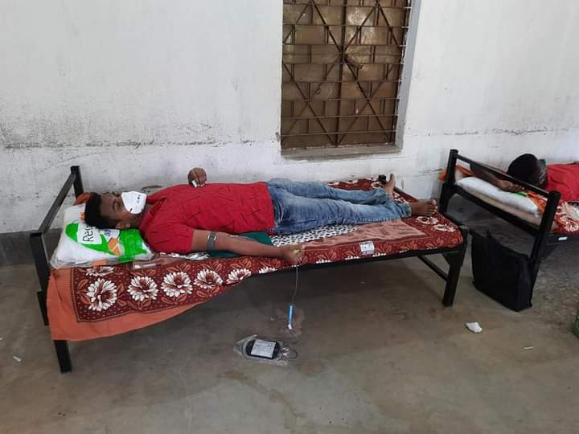

Blood Donation Camp
এই সংকটের দুর্দিনে অতি মহামারীর মধ্যে আমাদের বিদ্যালয়ের প্রাক্তন ছাত্রী ছাত্রীরা রক্ত দানের মত মহৎ কাজে এগিয়ে এলো । যে কোনো পরিস্থিতিতে রক্তের সংকট মেটাতে মানুষের পাশে দঁড়ানোর জন্য ওদের ইচ্ছাশক্তি আবারও প্রমাণ করলো মানুষ মানুষের জন্য। এভাবেই অদম্য সাহস আর ভরপুর ইচ্ছা শক্তি নিয়ে এগিয়ে চলুক ওরা, আলোকিত করুক নিজের গ্রাম তথা সমাজকে। এই সময়ে এই ধরনের এর উদ্যোগকে সফল করার জন্য বিদ্যালয় এর পক্ষ থেকে সমস্ত ছাত্র ছাত্রী অভিভাবক অভিভাবিকা দের প্রতি রইল একরাশ অভিনন্দন... অনুষ্ঠানে উপস্থিত থেকে আমাদের উৎসাহ যোগানোর জন্য মাননীয় জেলা বিদ্যালয় পরিদর্শক ( মাধ্যমিক ) সঞ্জয় চক্রবর্তী ও মাননীয় জেলা বিদ্যালয় পরিদর্শক ( প্রাথমিক ) শুভাশীষ মিত্র মহাশয় এর কাছে আমরা কৃতজ্ঞ। এছাড়া আমাদের অনুষ্ঠানে উপস্থিত ছিলেন ঝাড়গ্রাম ভলেন্টারী ব্লাড ডোনার ফোরাম এর সম্পাদক চন্দন সৎপথি মহাশয় ও সেবা প্রতিষ্ঠানের সম্পাদক সুদীপ্ত নায়েক মহাশয়। ভবিষ্যত এ ও যাতে এই ধরনের এর উদ্যোগ আমরা নিতে পারি তার চেষ্টা আমরা চালিয়ে যাবো...